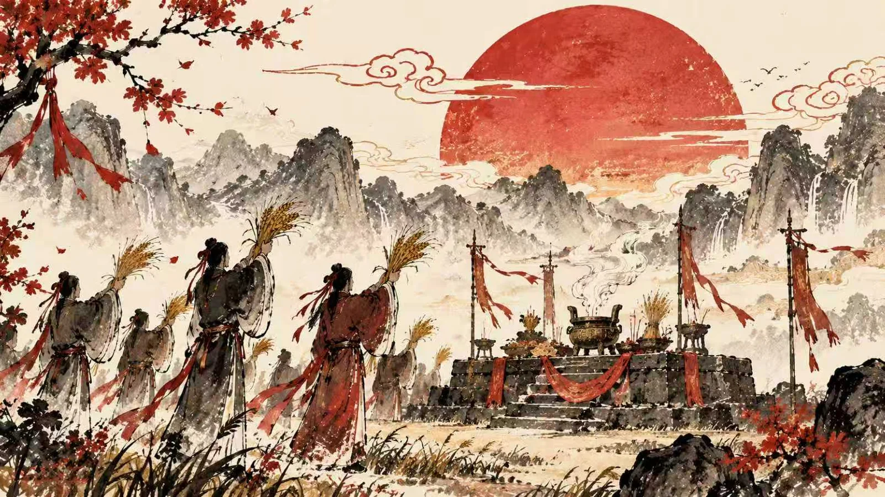

春节
岁首
一岁之首
万象更新
起源
春节起源于上古岁首祈岁祭祀，至今已有三千余年，是中华民族最隆重的传统节日。

-
上古
岁首祈年
殷商时期，年头岁尾已有祭神祭祖的活动。岁首的日期随历法不同而变动，但辞旧迎新的愿望始终如一。
-
前 104 年
太初历定岁首
汉武帝颁行《太初历》，确立以夏历正月初一为岁首。此后两千余年，正月初一作为岁首的传统基本沿用。
-
1914 年
“春节”定名
辛亥革命后改用公历，农历正月初一被定名为“春节”。1949 年 9 月 27 日，春节成为法定节假日。
-
2006 年
国家级非遗
5 月 20 日，春节民俗列入第一批国家级非物质文化遗产名录。
-
2024 年
世界非遗
12 月 4 日，“春节——中国人庆祝传统新年的社会实践”列入联合国教科文组织人类非物质文化遗产代表作名录。至此，中国共有 44 个项目列入 UNESCO 非遗名录、名册，居世界第一。
习俗
从腊月到正月十五，一套完整的年俗，把辞旧与迎新安放在每一天里。
-
腊月二十四
扫尘
“二十四，掸尘扫房子。”扫去旧尘，也扫去一年的晦气，取除旧布新之意。
除旧布新
-
腊月二十八、九
贴春联、福字
春联由古代桃符演变而来。福字倒贴多用于水缸、柜子，取“福到”谐音；大门传统上正贴。
迎春纳福
-
腊月
剪窗花
红纸在剪刀下变成花鸟、福禄寿。贴上窗，屋子就有了喜气。
纳福迎祥
-
除夕
年夜饭
阖家围坐的团圆饭。鱼寓意“年年有余”，常留头尾；饺子形似元宝，取“更岁交子”；年糕寓意“年年高”。
阖家团圆
-
除夕
守岁
晋代已有此俗，唐宋盛行。家人围坐通宵，辞旧迎新；长辈给晚辈压岁钱，压“祟”保平安。
辞旧迎新
-
正月初一
拜年
穿上新衣，走亲访友。晚辈先向长辈拜年，长辈受拜后分给压岁钱；传统还有投递名帖的习俗。
互致祝福
-
正月初一至十五
舞龙舞狮
龙象征吉祥勇猛，狮喻示力量与豪迈。锣鼓声中，人们祈求风调雨顺、五谷丰登。
祈岁纳吉
-
正月十五
闹元宵
北方“滚”元宵、南方“包”汤圆。赏花灯、猜灯谜，春节至此收尾。
灯火收年
传统燃爆竹驱邪迎祥；如今许多城市禁燃，电子鞭炮与灯会延续着年味。
生肖
十二种动物配十二地支，六十年一循环。点一点轮盘，看每个属相拴在哪一个时辰上。
当前查看
龙
辰龙年：2024、2012、2000
辰时七到九点，传说群龙行雨。龙是十二生肖里唯一虚构的动物，取尊贵、祥瑞之意。
天干
甲乙丙丁戊己庚辛壬癸
地支
子丑寅卯辰巳午未申酉戌亥
十天干与十二地支依次相配，从甲子到癸亥，六十年轮回一次，称“一甲子”。生肖随地支固定：子鼠、丑牛、寅虎、卯兔——所以属相每十二年回到原处。
纹样
中国人把祝福画成图案：一只蝙蝠是“福”，一条鱼是“余”。谐音与象征，凑成一套不必写字的年节语言。
-
蝙蝠
谐“福”
蝠与福同音，是最常用的年节纹样。五只蝙蝠环绕，即“五福临门”。
-
鱼
谐“余”
年年有余。年夜饭的鱼常留头留尾，双鱼相并则取“吉庆有余”。
-
葫芦
谐“福禄”
葫芦多籽，藤蔓绵长，既喻多子，也喻福禄万代不断。
-
石榴
多籽 · 多子
籽粒饱满，剖开见百子。“榴开百子”是老式婚嫁器物上最常见的祝语。
-
柿子
谐“事”
两枚并置，就是“事事如意”。柿子色橙红，也正合年节的喜气。
-
铜钱
财源
外圆内方，取“天圆地方”。钱纹相连成串，就是“财源不断”。
-
祥云
吉祥
云气升腾，取“平步青云”。云纹也常垫在龙、凤、蝙蝠之下作底。
-
回纹
绵延不断
一线回环，首尾相续，俗称“富贵不断头”，多用于器物口沿与门框。
纹样常叠加使用：蝙蝠衔一枚铜钱，是“福在眼前”；葫芦缠上藤蔓，是“福禄万代”；两枚柿子配一枝如意，便是“事事如意”。
灯谜
元宵夜的文字游戏。谜面绕着弯说，谜底往往就藏在一个被拆开的字里。
-
岁岁除夕
出
两个“岁”字各去掉“夕”，剩下两个“山”，合起来就是“出”。
-
一口咬掉牛尾巴
告
“牛”的一竖被“口”咬掉下半截，剩下的上半部分与“口”相合，就是“告”。
-
千里相逢
重
“千”在上、“里”在下，两字上下相叠，正是“重”。
-
人有了它，就变大
一
“人”加一横成“大”，所以这“一”就是谜底。
-
一夜连双岁，五更分二年
守岁
一夜跨过两个年头，五更分属两个年份——正是除夕守岁。
-
灯谜小识
别解，才是灯谜
灯谜分三段：谜面是给出的字句，谜目限定答案的范围，谜底才是答案。关键手法叫“别解”——故意把字词挪到另一个意思上。比如“岁岁除夕”，不是真的过年，而是把“夕”从“岁”字里除去。
诗词
五首诗词，五种年味。从爆竹声里的新岁，到旅舍灯下的乡愁。
元日
赏析
以爆竹、屠苏、曈曈日、新桃换旧符四个新年意象，写出除旧迎新的明快气象。
除夜作
赏析
除夕客居旅馆，以寒灯、霜鬓写羁旅之思与时光之叹。
拜年
赏析
写明代拜年投递名帖的风俗，语带讥诮，是古代“社交拜年”的生动记录。
守岁
赏析
捕捉孩童守岁强撑不睡、大人怕更鼓催年的细节，热闹中见惜时之情。
除夜雪
赏析
除夕夜雪、屠苏未举、灯下写桃符，写出文人守岁的清雅年景。